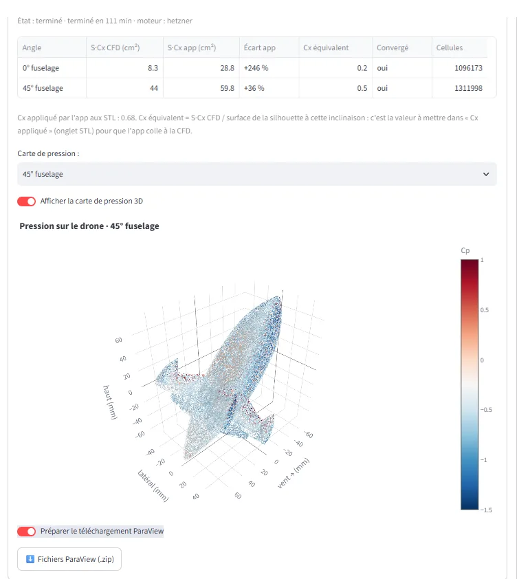
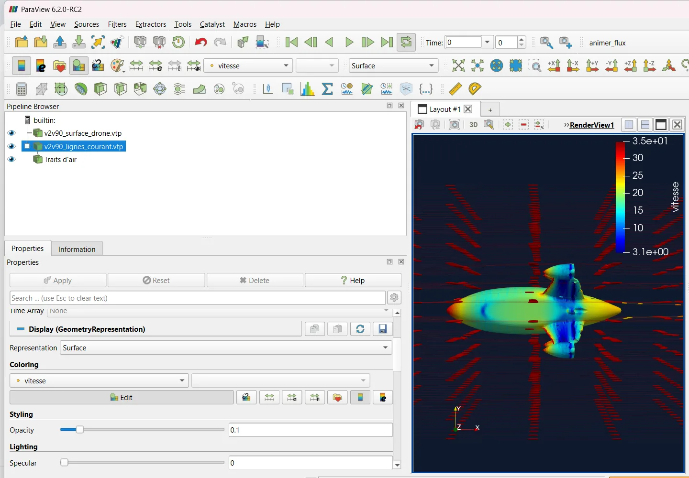
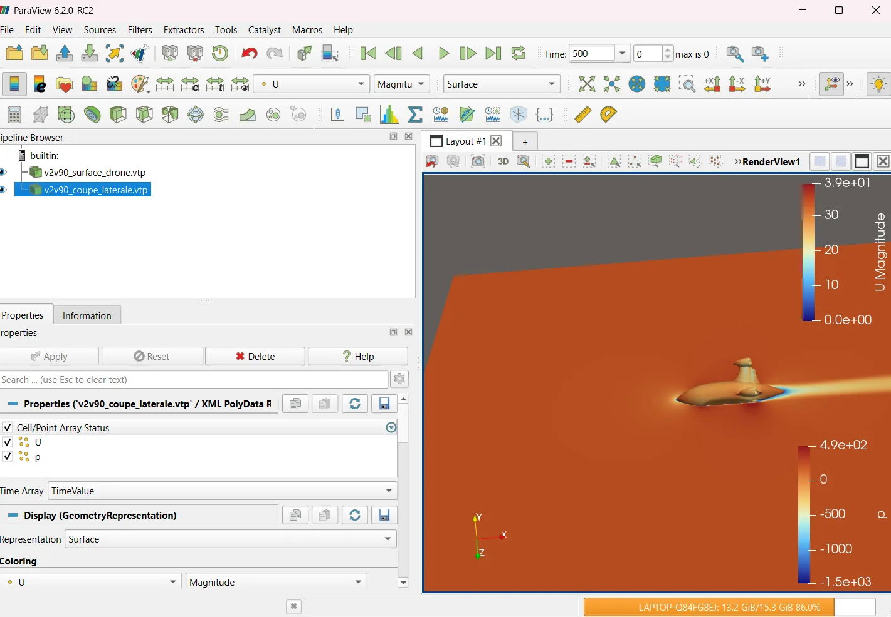

Design your FPV drone. Know its speed, power and flight time before you build it.
Thrust, top speed, flight time and 0 → 100 km/h, computed with real market components and calibrated on real GPS flights. From 3-inch quads to X8 cinelifters and streamlined Quad Speeders, in 2D, in 3D, and now through OpenFOAM CFD.
Everything you need to choose right
Pick your motors, props, frame, battery and electronics: performance updates live, with the price and shop link of every part.
Realistic top speed
Thrust that drops with speed, drag based on tilt, today's air density: not an unrealistic “theoretical” speed.
Flight time by flying style
Cinematic, freestyle or full throttle, with a discharge curve for each chemistry (LiPo, LiHV, Li-ion).
Safety alerts
Motors vs ESC, connector, prop size, voltage: incompatibilities are flagged before you buy.
0 → 100 km/h
Theoretical acceleration, horizontal and vertical, to compare how punchy each build is.
Parts list & cost
Complete shopping list, prices in EUR or USD, shop links, PDF / CSV export.
Build garage
Save and compare your builds side by side to find the best trade-off.
An interface made for pilots
- Pre-filters by frame size, frame type, brand, KV, prop pitch, cells, capacity…
- Memory of all your choices across the user guide and wiki pages.
- Today's conditions: altitude, temperature, humidity and weather pressure (QNH).

How it works
Pick your parts
Motors, props, frame, battery, electronics: over 1,000 real, filterable parts.
Read your performance
Speed, flight time, thrust, acceleration and alerts update with every change.
Compare & buy
Save your builds, compare them, export the shopping list with links.
From calculator to design workshop
Design your own frame or speed drone, see it in 3D, import your CAD drawings, run it through CFD and calibrate the calculation on your real measurements.
Your frame, drawn to scale
- 5 layouts: X, Dead Cat, Squished X, Stretch X, H-Frame, as a Quad or coaxial X8.
- Dimensioned sketch redrawn at every input, top and front view.
- 3D model you can tilt, with its exact frontal area at every angle.


The speed drone, pusher or tractor
- Teardrop fuselage, drag coefficient computed from its fineness ratio (Hoerner).
- Pusher (SPEEDER V2 type) or tractor on nacelles (Blackbird type).
- Fuselage angle: 0° in fast flight into the wind, 90° at take-off.
- Your Speeder as STL: dimensions taken from the model, adjustable battery and centre of gravity.


Your SolidWorks, Fusion 360 or Onshape drawings
- STL: 3D view, real silhouette at every tilt, and CFD simulation.
- DXF: your top and front views replace the sketch, with the same dimensions.
- 3D volume from your drawings: top + front (+ side) are enough to rebuild your drone.

From DXF drawings to a 3D model, in 3 steps


The instant estimate, before CFD
- Equilibrium tilt, drag, power absorbed by the air and required thrust, live.
- Props modelled to size, spinning, with their slipstream: thrust lost on the frame, front / rear split.
- Instant answers to explore; CFD to settle it.
The wind tunnel applies the simulator's formulas, calibrated on GPS flights; its particles illustrate the flow. The CFD simulation actually solves the airflow around your STL.


Your measurement becomes the reference
- GPS calibration: enter your measured speed, the calculation adjusts and keeps the setting.
- Online garage: 10 builds and your CFD runs, on all your devices.

A complete CFD run, no CFD engineer needed
An airflow simulation usually takes days of setup: domain, mesh, boundary conditions, solver, convergence checks. Here everything is automated and verified. You pick the tilt and the speed, the compute server does the rest.
-
1 · Your STL
Exported from SolidWorks, Fusion 360 or Onshape. Orientation checked on 3 views, like in a slicer.
-
 2 · Automatic meshing
2 · Automatic meshingSTL repaired, domain sized to the drone, ≈ 1 million cells, fine near the surfaces and in the wake.
-
3 · OpenFOAM solve
simpleFoam, k-ω SST turbulence, until the drag is stable. If it doesn't converge, the run continues or reports it.
-
 4 · Results in the app
4 · Results in the appMeasured drag area, equivalent drag coefficient, lift, comparison with the quick estimate, 3D pressure map.
-
5 · ParaView
Surface, slices and streamlines to download, with the macro that makes the air flow.
Your own model
Not a generic shape: your frame, your fuselage, your battery, exactly as you designed them.
Checked at every step
Mesh checked (checkMesh), 3 attempts if it fails, 3 % convergence. Never a wrong number shown: an error is reported as an error.
Several tilts
Compare slow and fast flight in a single request, up to 800 km/h for a Speeder.
Where the air pushes, where it lets go
The pressure on every surface shows where the drag comes from: red, the air hits the drone; blue, it is sucked away. Behind it, the wake shows the slowed air the drone drags along.


Fuselage into the wind: 5 times less drag
- Flat into the wind, the V2V Speeder has only 9 cm² of drag area: an equivalent drag coefficient of 0.22, an imperfect teardrop.
- Tilted at 45°, the same drone reaches 45 cm²: five times more. Keeping the fuselage in the wind is the key to speed.
- The app's quick estimate (fixed Cd 0.68 for an STL) overestimates the drag of a well-streamlined Speeder: CFD corrects it.
Steady RANS, without the propellers or their slipstream, wall functions: ±15 to 25 %. To be confirmed by a GPS flight, like the rest of the simulator.
| Case (120 km/h) | Quick estimate | OpenFOAM CFD | Cd |
|---|---|---|---|
| V2V Speeder · fuselage 0° | 28.8 cm² | 9.2 cm² | 0.22 |
| V2V Speeder · fuselage 45° | 59.8 cm² | 45.5 cm² | 0.52 |
S·Cd = drag ÷ (½ ρ V²). Meshes of 1.0 to 1.3 M cells, convergence < 0.3 %.
Run a CFD simulation and see the air around your drone
Three stages: run the simulation in the app, read the results, then animate the flow in ParaView (free). Follow them in order, without skipping.
A Run the simulation in the app
- Pick the right architecture at the top of the app: Quad X for a regular drone, Quad Speeder for a fuselage drone. It sets how angles are counted.
- Load your STL: 📦 Import de plan > 📦 Modèle 3D (STL) tab. Set the unit (mm, cm or m, as in your CAD), the front axis and the up axis.
- Check the 3 views: nose forward, top of the drone up. Tick “exported in flight attitude” only for a Speeder drawn horizontally, like a plane.
- 🌀 Calcul CFD tab: choose the tilt (Quad X: drone angle, e.g. 35°) or the fuselage angle (Speeder: 0° = fast flight), then the speed. One or two angles are enough: each takes 30 to 60 min.
- Click “🚀 Lancer le calcul CFD”. The request shows in Mes calculs CFD: ⏳ waiting, ⚙️ running (mesh, then solve), ✅ done. You can close the app, the run continues.
B Read the results
- Open your ✅ finished run in Mes calculs CFD: the table gives, for each angle, the drag area S·Cd, the equivalent Cd, the gap with the app's quick estimate and convergence.
- Turn on “Afficher la carte de pression 3D” and pick the angle: red = air pushing, blue = suction. Rotate with the mouse.
- Turn on “Préparer le téléchargement ParaView”, then click “Fichiers ParaView (.zip)”. The zip lands in your Downloads: unzip it into a folder of your own.
- To make the app match the CFD: copy the equivalent Cd into “Cx appliqué” in the STL tab.

C Animate the air in ParaView
- Install ParaView: paraview.org/download > Windows tab (or macOS / Linux) > the
…-Windows-Python3.12-…-AMD64.msifile (without “MPI”). Install with default options. - Import the macro, once: Macros > Import new macro… >
animer_flux.py(in your zip). An animer_flux button appears at the top right. - Open two files of the same angle: File > Open, then Ctrl+click
v2v90_surface_drone.vtpandv2v90_lignes_courant.vtp(“90” = same angle), OK, then the green Apply button. - Don't open the slices (
coupe_laterale,coupe_verticale): they are opaque planes that hide everything (red screenshot below). - Click animer_flux: dark blue background, coloured drone, a “Traits d'air” line in the Pipeline Browser. Then ▶ Play: the air flows.
- Rotate (left click), zoom (scroll), then File > Save Animation: Frame Rate 30, 1920 × 1080, MP4 or AVI. Save State keeps the scene for later.


Not working?
Error at line 13, 23 or 34: ParaView is using an old copy of the macro. Macros > Delete > animer_flux, then re-import the one from the zip.
Colours
vitesse (speed) for the lines (blue = slowed air, red = accelerated), p for the drone surface (× 1.2 = Pa).
Choppy video?
The Frame Rate was 1: set it back to 30 in Save Animation. 90 frames = 3 smooth seconds.
Calibrated on real flights, not a brochure
The aerodynamic model is tuned and checked on full-throttle flights measured by GPS. It accounts for the drone's real tilt, the thrust drop with speed, air density and battery format. CFD now complements these measurements for shapes that haven't flown yet.
Reference flight measured by GPS
| Frame | TOWA 5″ freestyle, 539 g |
| Motors / props | XING-E 2207 2450KV · Ethix S5 |
| Battery | 3S 1550 mAh |
| Conditions | 1,046 m · 0 °C · 35° |
| 2nd check flight | 126 km/h · 436 m · 10 °C |
Drones that actually fly
The measurements used to calibrate the simulator, and what the same TOWA 5″ does once lightened and tuned.


The simulator is calibrated on the 121 and 126 km/h reference flights (stock build, no wind). 145 km/h was reached after weight savings and Betaflight tuning; 186 km/h with a tailwind.
Built by a pilot who builds his own drones
Cut frames, 3D-printed parts, wiring and weighing: the simulator was born in the workshop, to know before you build.


Free or Premium
Free
- Thrust, speed, flight time, 0 → 100 km/h
- Drag based on tilt and battery
- Safety alerts and shopping list
- Garage with 3 builds
Premium · Founder offer
- OpenFOAM CFD of your STL, up to 10 per month
- ParaView files + flow animation macro
- Prototype frame, 5 layouts + sketch + 3D
- Quad Speeder pusher / tractor + 3D
- STL and DXF import, virtual wind tunnel
- GPS calibration, online garage
Limited to the first 100. One-time payment on Ko-fi: add your email in the message and you'll get your personal code within 24 h. Questions: talktruefpv@gmail.com
Frequently asked questions
What is the CFD simulation?
A real simulation of the airflow around your drone, run with OpenFOAM (the open-source CFD software used in industry) from your STL file. You get the measured drag area (S·Cd), the equivalent drag coefficient, lift, a 3D pressure map and a file pack for ParaView.
Do I need to know OpenFOAM?
No. Upload your STL, pick the tilt and speed, and the compute server does everything: STL repair, domain, snappyHexMesh meshing, k-ω SST solve until convergence, checks. Nothing to install on your computer.
How long does a run take?
A few tens of minutes per tilt, depending on the model size and the queue. You can close the app: the run continues and the result waits for you in the 🌀 Calcul CFD tab.
How do I view the results in ParaView?
Install ParaView (free), download your run's zip, import the animer_flux.py macro (Macros > Import new macro), open surface_drone.vtp and lignes_courant.vtp of the same angle, click the macro then ▶. Step by step in the ParaView section.
Is the CFD exact?
It is a steady (RANS) simulation without the propellers or their slipstream, with wall functions: allow ±15 to 25 %. It's ideal to compare shapes and see where drag comes from. Real speed is confirmed by a GPS flight, on which you can recalibrate the simulator.
And the virtual wind tunnel?
It's the instant estimate: same formulas as top speed, calibrated on GPS flights, with the airflow and prop slipstream illustrated. Use it to explore, then CFD to settle it.
Is the simulator free?
Yes. Thrust, speed, flight time, acceleration and safety alerts are free, no sign-up. Premium adds CFD, the prototype frame, the Quad Speeder, 3D, STL/DXF import, GPS calibration and the online garage.
How is it different from eCalc?
eCalc is a reference for pure calculation. TALKTRUE FPV is a design platform: CFD of your own model, real parts with prices and shop links, a build garage, dimensioned sketches, 3D models and import of your CAD drawings.
Who is BOB?
BOB the Racer is the yellow-canopy racing drone that inspired the TALKTRUE FPV logo: his silhouette sits at the centre of the sphere. The brand's mascot, and a real drone that flies.
How do I get Premium access?
With the Founder offer: €24 once, lifetime Premium access, limited to the first 100. Pay on Ko-fi with your email in the message and you'll get your personal code within 24 h. Questions: talktruefpv@gmail.com or Instagram @talktruefpv. The app interface is in French.
Ready to see what your drone is really made of?
Pick your parts, read your speed, then run your model through CFD.
🚀 Launch the simulator